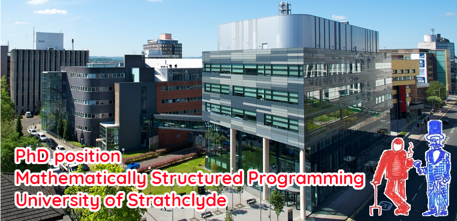

PhD Position: A Correct-by-Construction Approach to Approximate Computation
This position is no longer available.
Applications are invited for a fully funded UK PhD studentship in the areas of type theory, category theory and/or logic, under the supervision of Dr Fredrik Nordvall Forsberg, and Professors Neil Ghani and Radu Mardare. The research will be part of the recently EPSRC-funded project "A Correct-by-Construction Approach to Approximate Computation", which seeks to develop type-theoretic tools and frameworks for approximation.
The position is for 3 years, with a start date of 1 October 2024. It includes both coverage of fees and an stipend, and is open to UK-based applicants. Note that unfortunately tuition fees for international students are not covered by the position.
The successful applicant will become part of the Mathematically Structured Programming group at the University of Strathclyde. It is likely that you will also work with the other members in the group, which include Conor McBride, Robert Atkey, Clemens Kupke, Glynn Winskel, Jules Hedges, Guillaume Allais, Jan de Muijnck-Hughes, Ross Horne, William Waites, and currently 10 PhD students. We are located in the city centre of Glasgow, with plenty of both culture and nature nearby. Scotland is a great place for theoretical computer science: we have active collaborations with researchers Edinburgh, Heriot-Watt, Glasgow and St. Andrews.
Applications, requests for further information, and other informal enquiries can be sent to Fredrik Nordvall Forsberg. If you are interested, please get in touch as soon as you can. We hope to appoint in early March.
